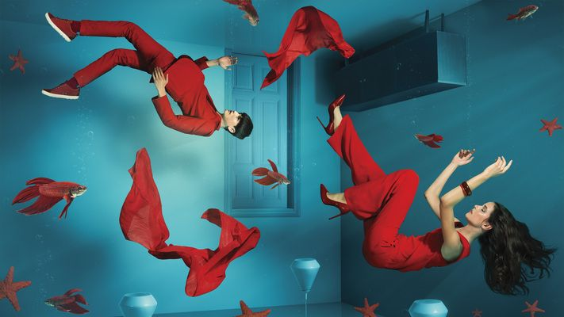

Sagmeister & Walsh

box
Jessica Walsh's style is characterized by bold use of color, experimental typography, playfulness, and a strong conceptual foundation. Her work is diverse and often carries a sense of humor and empowerment.Jessica Walsh gained much of her inspiration through female leaders such as Paula Scher. Walsh was aware of her responsibility as a female leader within a male dominated field, and she sourced her inspiration from female designers, acknowledging that the agency world has been a tough place for such women leaders.
Style
